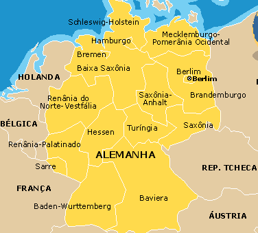
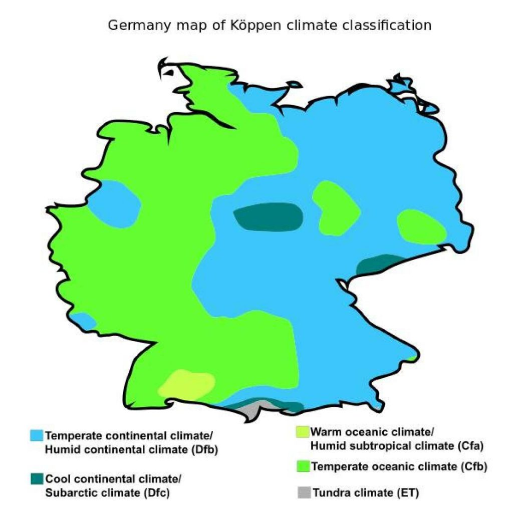
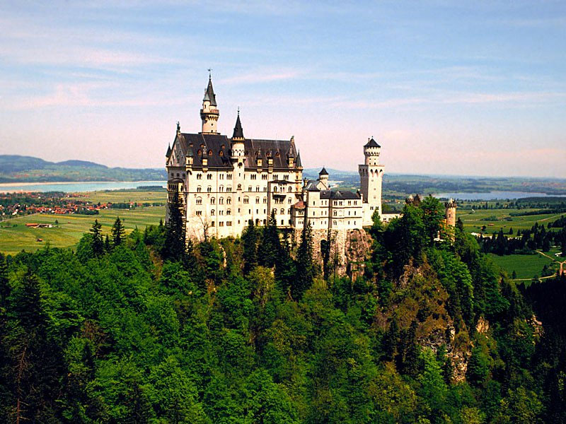

Geografia
O território da Alemanha cobre 357 021 km², sendo 349 223 km² de terra e 7 798 km² de água. É o sétimo maior país por área na Europa e o 63° maior no mundo.Por causa de sua localização central, a Alemanha compartilha fronteiras com mais países europeus que qualquer outro país no continente. Seus vizinhos são a Dinamarca no norte, Polônia e a Chéquia no leste, Áustria e Suíça no sul, França e Luxemburgo no sudoeste e Bélgica e os Países Baixos no noroeste.

Clima
Grande parte da Alemanha tem um clima temperado no qual os ventos úmidos ocidentais predominam. No noroeste e no norte os invernos são amenos e os verões frescos, embora as temperaturas possam exceder os 30 °C por períodos prolongados,no leste temos invernos muito rigorosos, verões muito quentes, já centro e o sul da Alemanha são regiões de transição que variam entre os climas oceânico moderado para continental. A temperatura máxima também pode exceder os 30 °C no verão.

Biodiversidade
A maior parte da Alemanha é coberta por terras aráveis (33%) ou florestas e bosques (31%). Apenas 15% do território é coberto por pastagens permanentes .Plantas e animais são aqueles geralmente comuns para a Europa central. Faias, carvalhos e outras árvores de folha caduca constituem um terço das florestas, os abetos e pinheiros predominam nas montanhas superiores, enquanto o pínus e larix são encontrados em solo arenoso. Há muitas espécies de samambaias, flores, fungos e musgos. Abundam peixes nos rios e no mar do Norte. Os animais selvagens incluem javalis, veados selvagens, muflão, a raposa, o texugo, a lebre, e um pequeno número de castores.

Contatos

Rua Xv de Novembro,1171 - Itapira/SP

Telefone: (19) 99174-3631

bruno.rftt@gmail.com
Agência Web LTDA
Sou apenas um pigmeu, se divertindo com a internet
e minha função aqui é só trazer um pouco de alegria para
a vida de todos S2